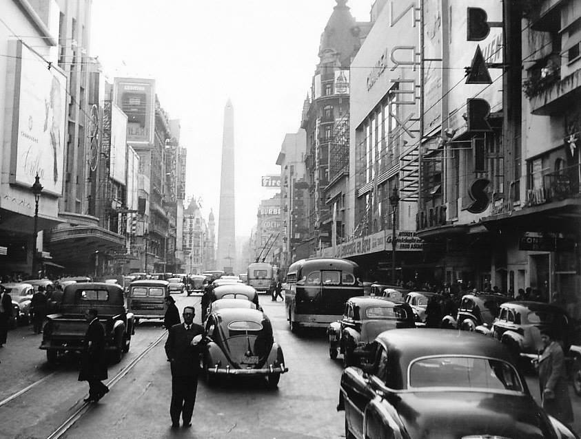
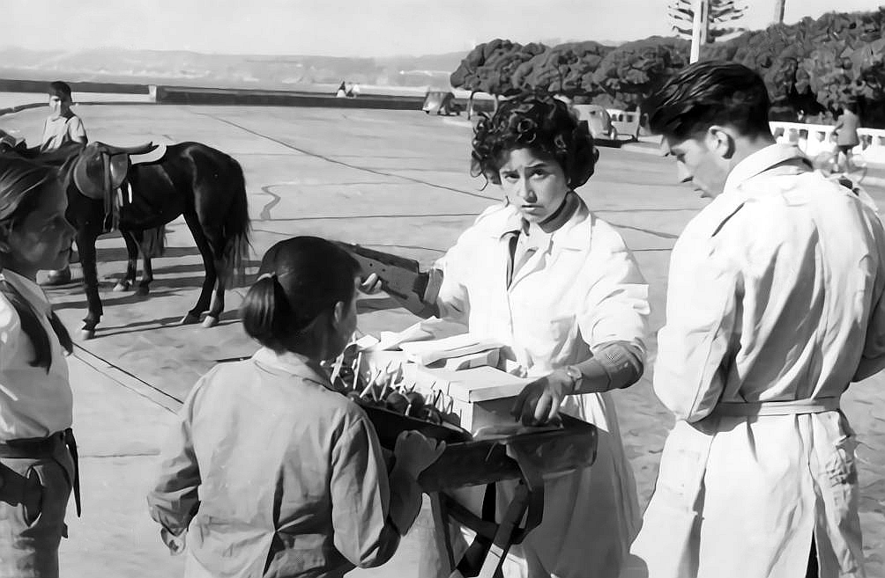

Su creación en la segunda década del siglo XIX nos habla de una voluntad temprana de resguardar una memoria del pasado, aunque el deterioro de los documentos y el persistente abandono que vivieron las instalaciones y los trabajadores/as de la institución en distintos momentos de su historia permite observar que el resguardo del pasado no fue siempre una prioridad o un valor fundamental. Fue bajo estas tensiones que esta institución se forjó. Es sobre ese proyecto que profundizaremos en los ejes de modernización y democratización del acervo.